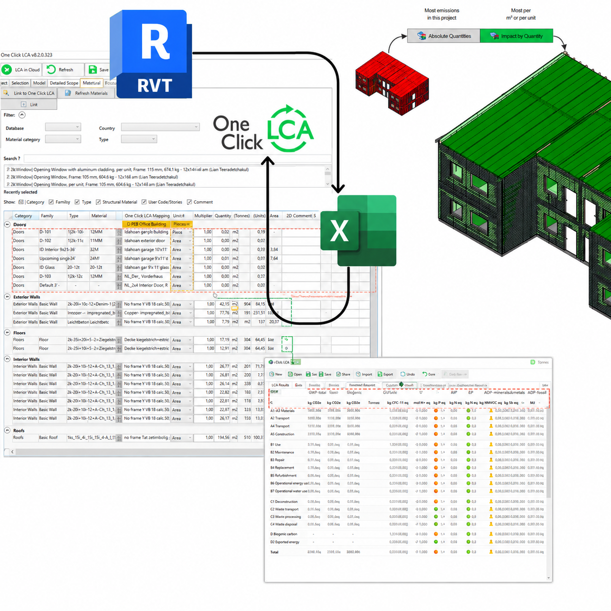

Add your image here'"/>This initiative was launched as a partnership between the Sustainability Department and Mestergruppen Arkitekter, aiming to create an internal workflow for generating Life Cycle Assessment (LCA) reports utilising One Click LCA. The objective was to assess the environmental impact of building elements based on Environmental Product Declarations (EPDs) linked to the company's material library.
I started by evaluating various data extraction techniques:
Through comparative analysis, I determined that the Excel-based workflow provided the highest efficiency and reliability, allowing for improved control over data accuracy and consistency.
Calculations based on Revit presented several challenges: inconsistencies in quantity data (areas and volumes), and the necessity for ongoing manual adjustments. Often, similar materials had identical EPDs but required tailored quantity and unit corrections, which proved challenging to automate.
To overcome these obstacles, I created a sophisticated Excel tool featuring an integrated EPD database. This tool allowed for the addition of new materials at any time, and a separate input sheet where users could paste exported material lists from Revit.
The tool automatically identified materials with corresponding EPDs, flagged missing entries, and produced a formatted dataset ready for import into One Click LCA — significantly enhancing the efficiency of material–EPD matching and the consistency of early-stage LCA calculations.